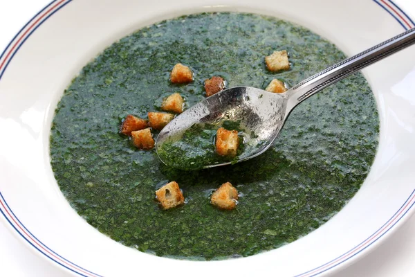

Molokhea

Description
An Egyptian recipe that is so delicious
Ingredients
- Mallow leaves
- Chicken Broth
- Garlic
- Ghee
- Salt
Steps
- To make molokhia soup, you’ll cook the minced leaves in chicken broth and
leave it to gently simmer until it bubbles on the edges and becomes fragrant.
- While the soup cooks, you’ll make the tasha by pounding together the minced garlic,
toasted coriander seeds, and a pinch of salt, then frying it in ghee.
- It’s essential to make sure the paste is ready to incorporate into the
soup at the right time—when the paste becomes fragrant, crisp, and orange-hued,
you’ll add it to the soup to give it additional depth of flavor.
And that’s all there is to it!
- To gild the lily, I garnish my molokhia soup with pickled
red onions. About an hour before I serve the molokhia,
I combine thinly sliced red onions,
lime juice, and distilled white vinegar in a jar.
The pickled red onions add a vivid pop of color
to the soup, and lend satisfying acidity.